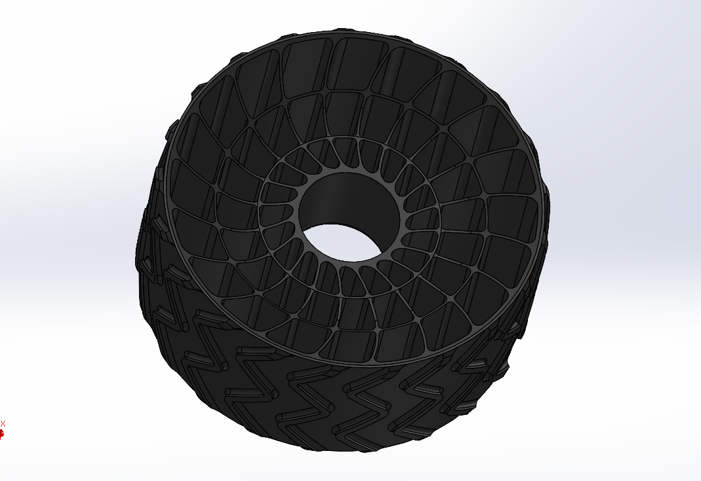
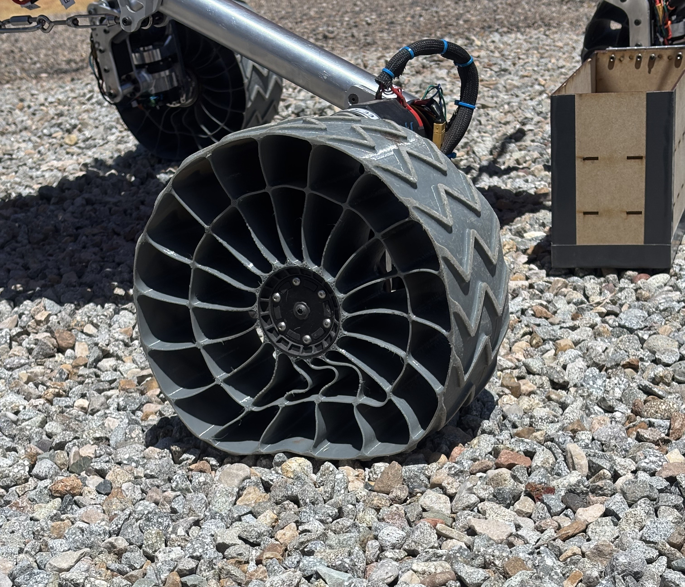
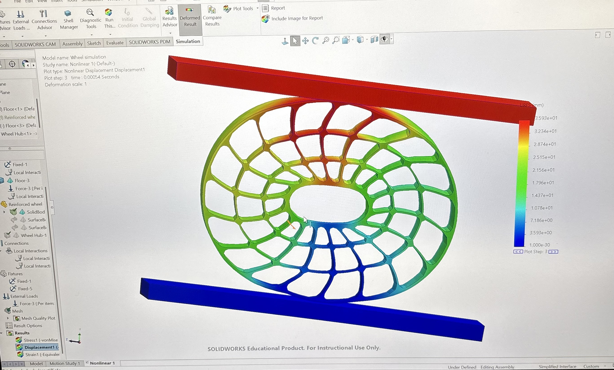

Wheel Redesign
Redesigned the rover's wheels for improved stiffness and ground clearance after the original design deformed under load and lost traction on rough terrain.
Wheel Redesign
Background
The rover's original wheels deformed under load and would interfere with ground clearance the life detection system — an issue that we ran into during the competition in Utah. I redesigned the wheels to improve stiffness and ground clearance without adding significant weight or hindering traction.

Design & Testing
I tested multiple spoke geometries, iterating on spoke count, rim thickness, and hub interface to find a design that balanced stiffness, traction, and weight. I 3D printed fixtures to test deformation under load for various filament types, including different varieties of TPU-95A, and used those results to find the best filament for the final wheels.
